Part 5: Programming the Processing System
Create an Application Project and a Board Support Package
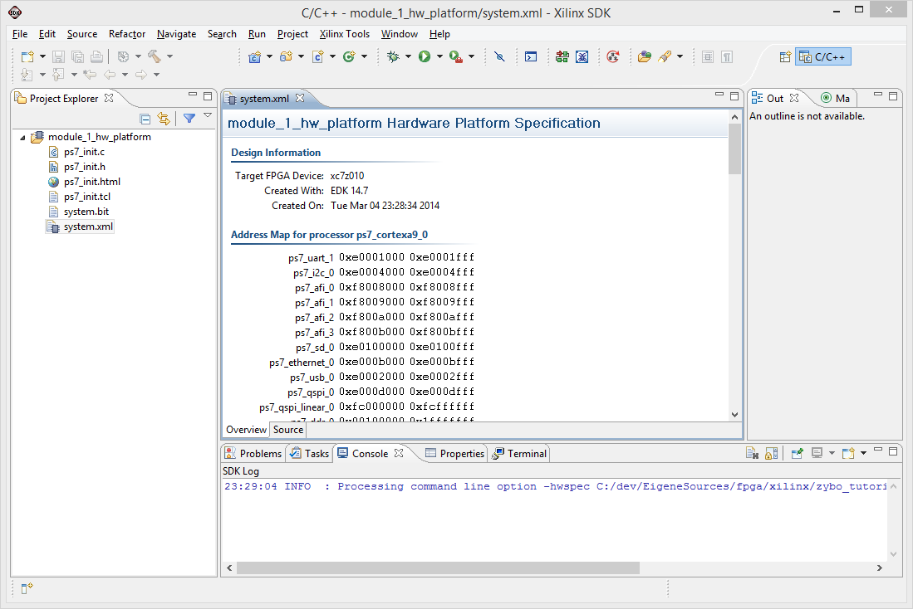 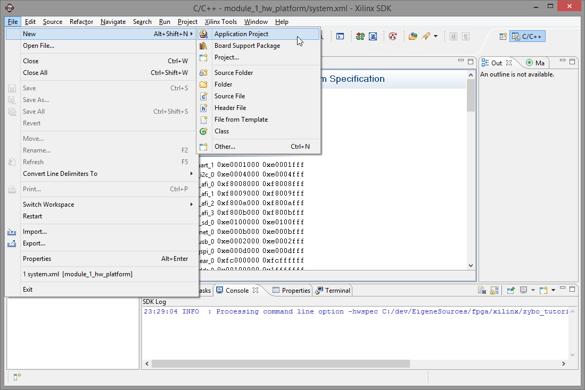 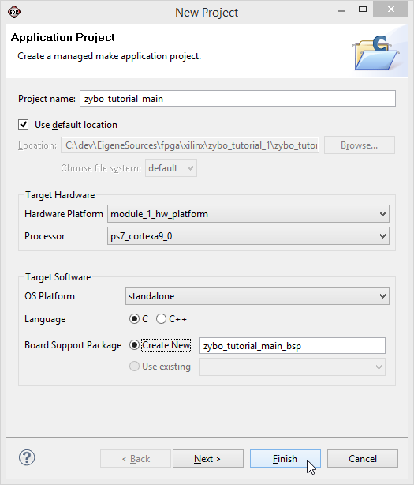Wait for the build of the BSP to finish.
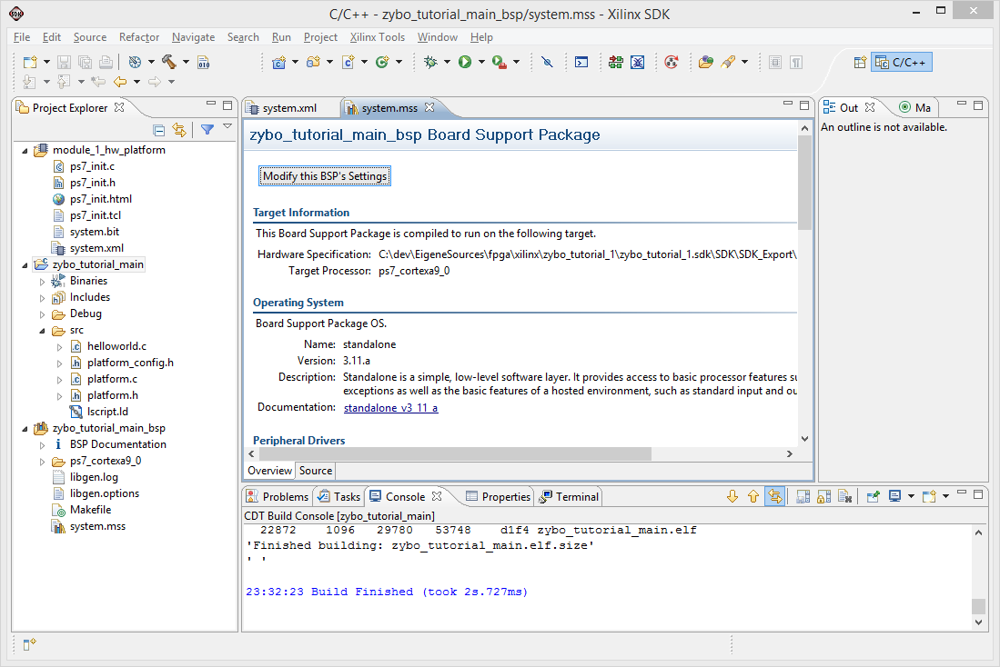 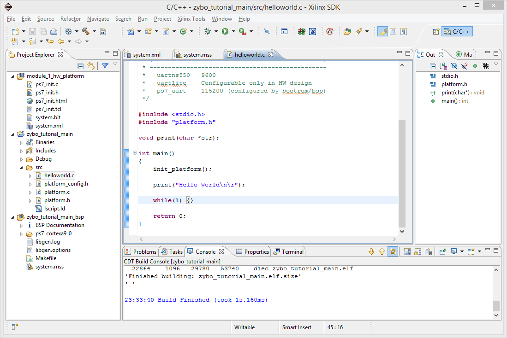Program FPGA
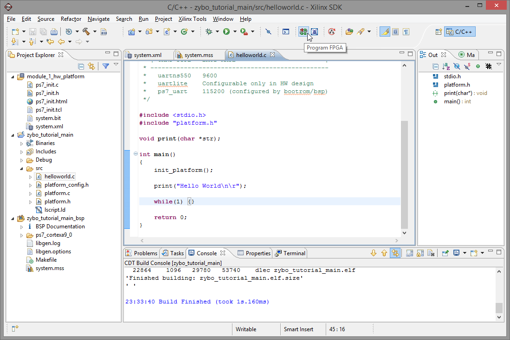Make sure the exported Bitstream is selected. If the field is empty and the Search... box lists no bitstream file, you probably missed exporting it to the SDK. You may either repeat that step or use Browse... here to navigate to the bitstream file up the directory hierarchy.
When doing this the first time you will probably run into the error message Program FPGA failed due to the missing Xilinx Hardware Server.
Since we do not use that, we need to change that using the Xilinx Tools, Configure JTAG Settings menu.
In the dialog, select the Digilent USB Cable and confirm the change, closing the dialog.
After that, flash again and wait for the message FPGA configured successfully with bitstream to appear in the console.
Run and debug the program
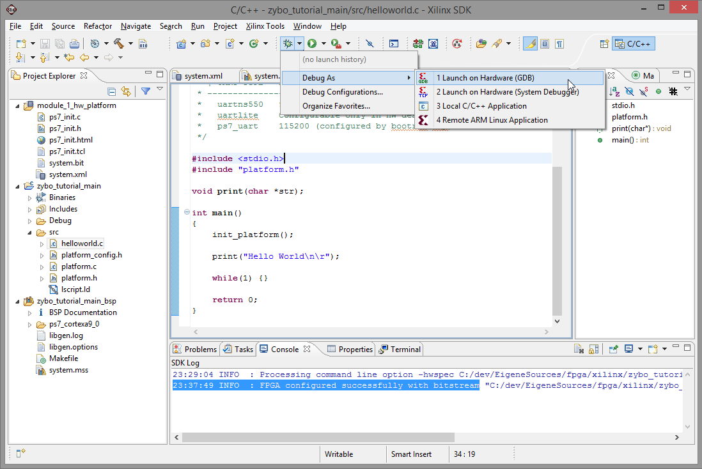 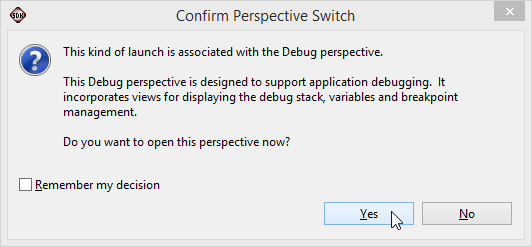 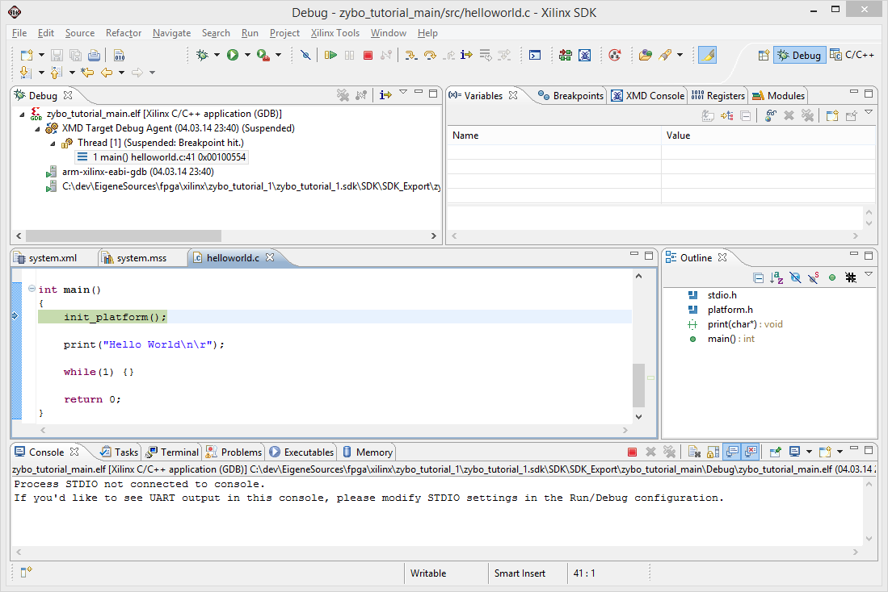 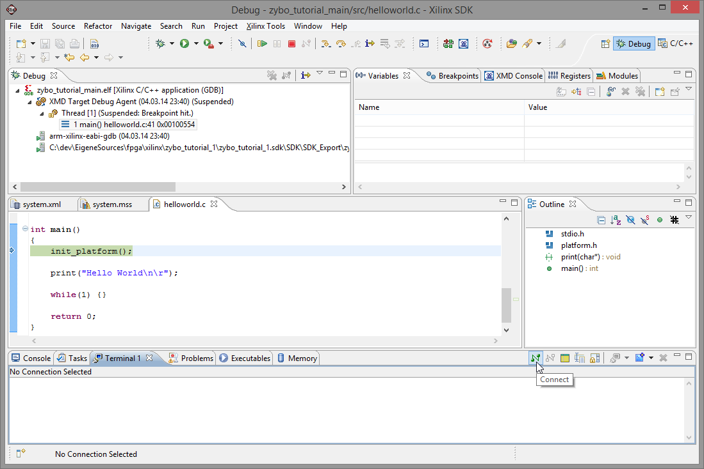 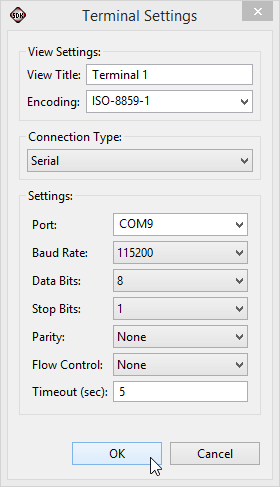 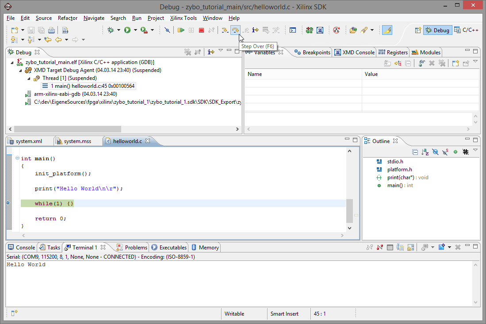Play around with the switches and buttons and see if it works.

Having the switches and buttons xor'd, note how the leftmost LED is down, while the rightmost LED is high. Have fun!
Notes about resetting the system
At the moment all configuration is stored in a volatile manner. Resetting either the Processing System using the PS-SRST or the Programmable Logic using the PROGB button will revert any changes. If you have a vanilly ZYBO with the Terminal still attached, an output like the following may occur.
That's a different story though.
Parts of the tutorial
- Previous: Creating the Bitstream.
- Back to the start: Table of contents.